Sản phẩm › FEDDY
Khách mua ở cửa hàng ngày càng thích đồ ăn liền: mở gói là ăn, ngon, bao bì sạch sẽ.


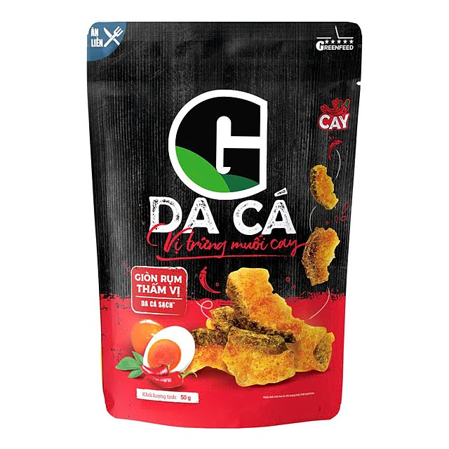
Qua FEDDY, Quỳnh Hòa phân phối hai nhãn G (bao bì đen – xanh) và Wyn (bao bì vàng) của Tập đoàn GREENFEED Việt Nam: đồ ăn vặt, lạp xưởng để kệ thường; xúc xích, chả lụa, nem chua, ức gà ăn liền cho tủ mát; chả giò, thịt tẩm ướp cho tủ đông. Danh mục, quy cách và mô tả theo brochure GreenFeed Food tháng 10/2025 và web chính hãng gkitchen.com.vn.
Da cá, khô gà, da heo gói nhỏ treo gần quầy tính tiền; lạp xưởng, patê hộp Wyn để lâu ở nhiệt độ thường.
Hợp với: Tạp hoá, cửa hàng tiện ích, quán cà phê, quán bia
Xúc xích, chả lụa que, nem chua, jambon, ức gà ăn liền: bóc ra là ăn hoặc làm nóng 1 phút.
Hợp với: Cửa hàng có tủ mát, siêu thị mini, căng tin, quán cổng trường
Xúc xích Top One, chả giò, thịt viên, cá que, sườn và xiên que tẩm ướp sẵn: rã đông là chiên, nướng.
Hợp với: Cửa hàng có tủ đông, quán ăn vặt, quán chiên nướng
3 nhóm hàng, 63 mã. Nhắn Zalo OA để nhận giá cho cửa hàng của anh chị.
Da cá tươi nguyên miếng chiên chân không, thơm bùi, giòn tan.
Gói 25g · thùng 24 gói (hãng có thêm gói 50g)
Giòn rụm, cay béo đậm đà.
Gói 25g · thùng 24 gói (hãng có thêm gói 50g)
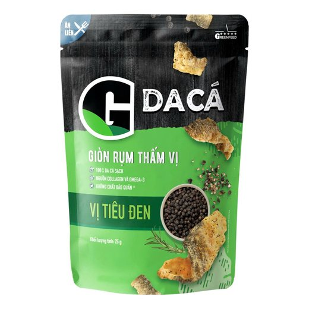
100% da cá sạch, bùng vị tiêu đen, giòn rụm thấm vị.
Gói 25g · thùng 24 gói
Sợi khô giòn dai, thơm lá chanh; ngon hơn khi dùng kèm đồ uống.
Gói 22g · thùng 48 gói
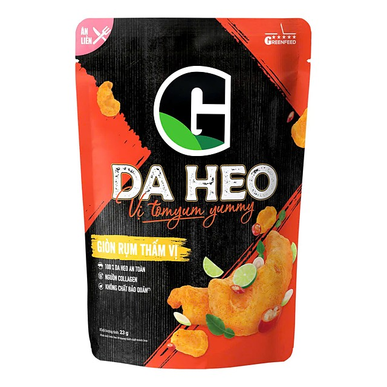
Da heo giòn rụm, vị tomyum từ lá chanh, sả, ớt.
Gói 23g
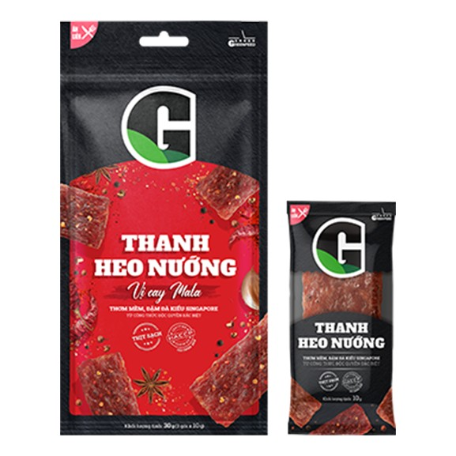
Thịt nướng mềm, đậm đà, vị cay tê Mala.
Gói 30g
Mai Quế Lộ cùng tiêu xay, đậm đà vị lạp xưởng gia truyền.
Gói 200g · thùng 24 gói; gói 500g
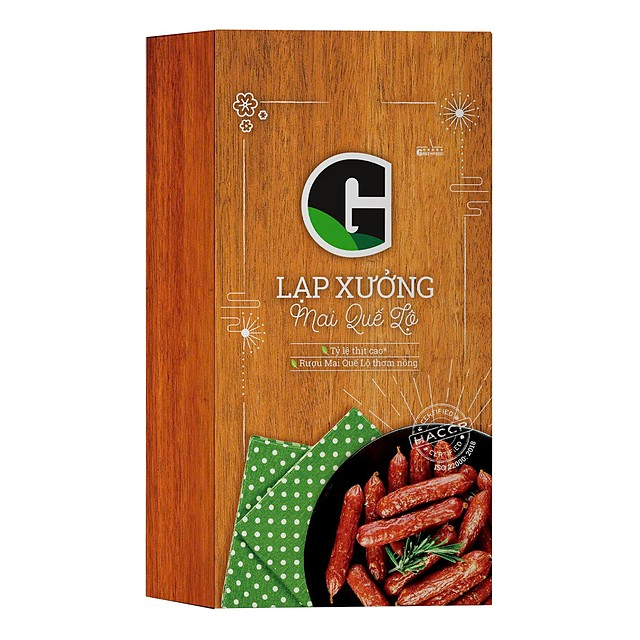
Ngọt nhẹ, xốp mềm, thơm rượu Mai Quế Lộ; hợp nướng, chiên, hấp.
Gói 200g · gói 500g
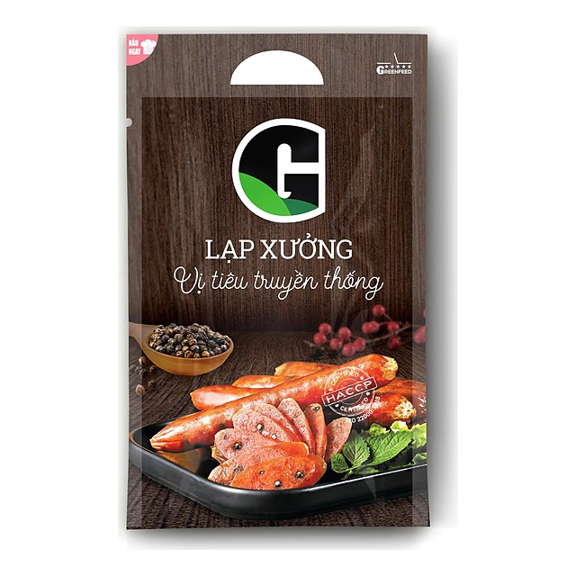
Tiêu đen nguyên hạt hoà quyện rượu Mai Quế Lộ, nạc mỡ hài hoà.
Gói 200g · gói 500g
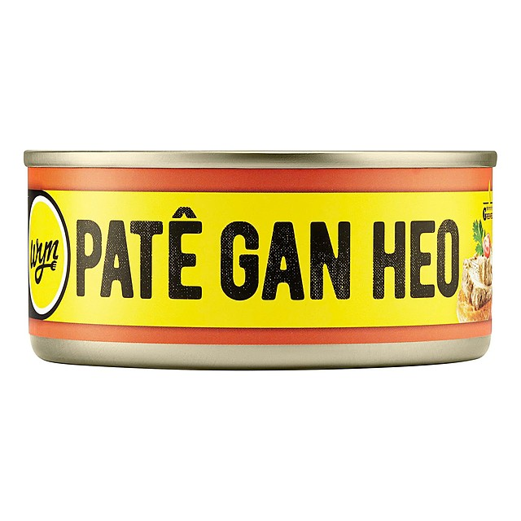
Tỉ lệ gan 35%, ăn liền với bánh mì; để nhiệt độ phòng, hạn dùng 3 năm.
Lon 150g · thùng 40 lon
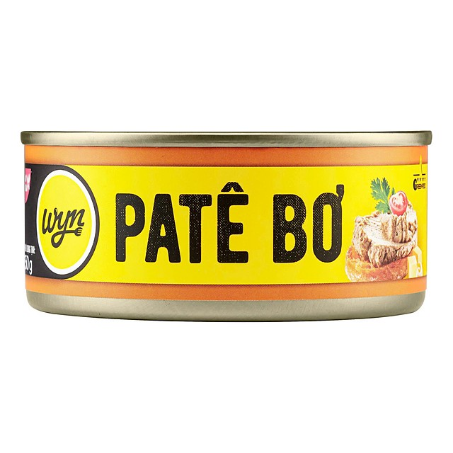
Patê kết hợp bơ, thơm béo; để nhiệt độ phòng, hạn dùng 3 năm.
Lon 150g · thùng 40 lon
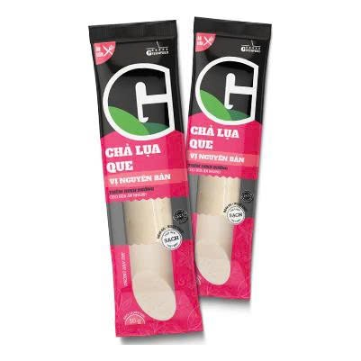
Dạng que tiện 1 lần ăn; hợp ăn kèm mì gói, bánh giò, bánh giầy.
Que 50g · 18 que/hộp · 12 hộp/thùng
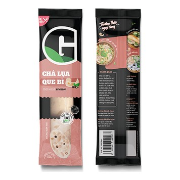
Thịt ngọt, bì giòn; dễ mang theo.
Que 50g · 18 que/hộp · 12 hộp/thùng
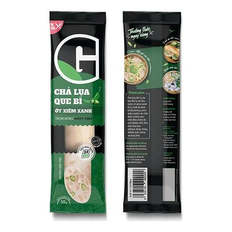
Thơm nồng ngọt thịt, cay nhẹ, bì giòn.
Que 50g · 18 que/hộp; túi 200g (4 que) · 24 túi/thùng
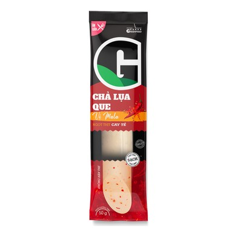
Thơm hương Mala, cay tê; hợp tteokbokki, mì trộn.
Que 50g · 18 que/hộp · 12 hộp/thùng
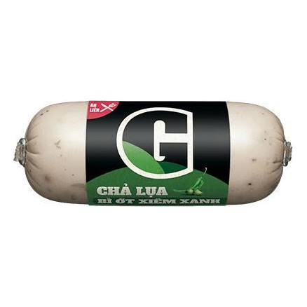
Không hàn the; ớt xiêm xanh cay nhẹ, bì hạt lựu dai giòn.
Cây 500g · cây 200g
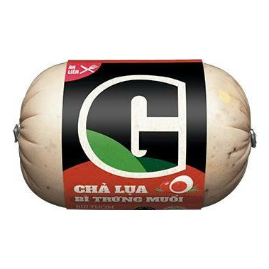
Không hàn the; trứng muối béo thơm, bì giòn sần sật.
Cây 500g · cây 200g
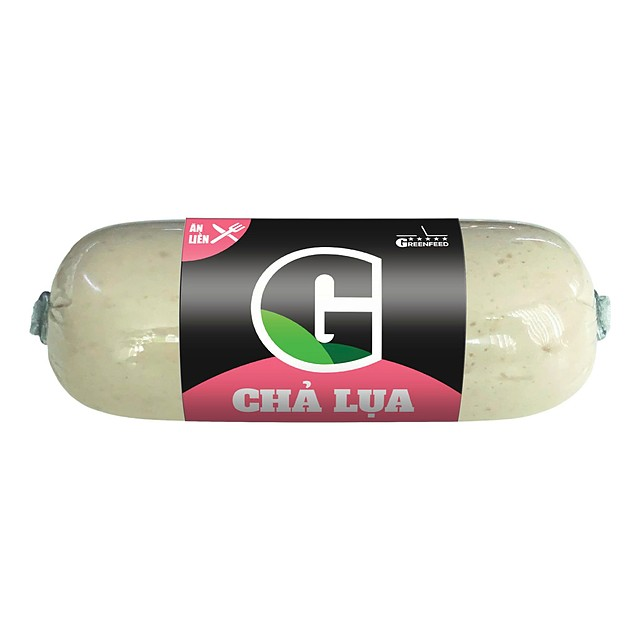
Không hàn the; ngọt thịt tự nhiên, thớ chả dai giòn mướt.
Cây 500g · cây 200g
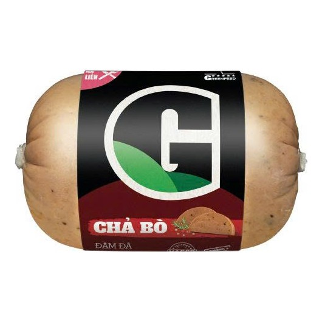
Ngọt đậm thịt bò, thơm tiêu đen; không hàn the.
Cây 475g
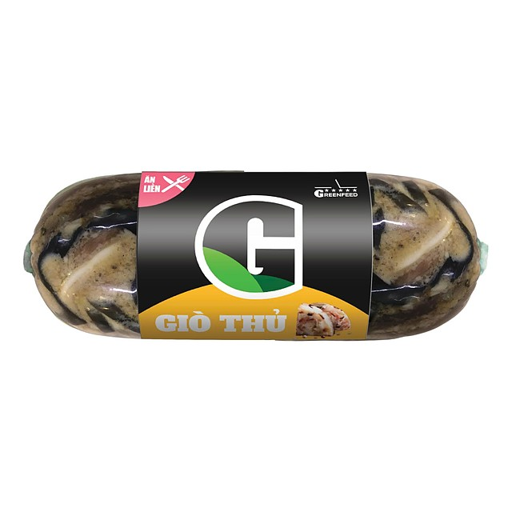
Giòn dai, đậm đà, có nấm, tỏi, tiêu đen; không hàn the.
Cây 475g · cây 200g
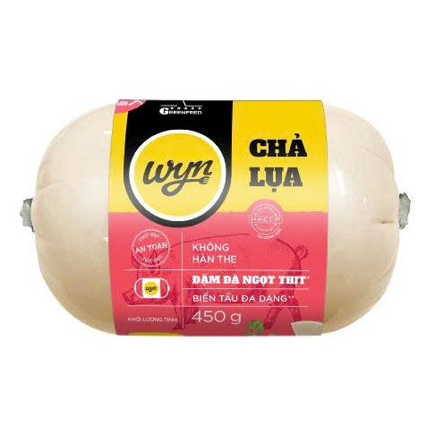
Thớ thịt dai giòn, ngọt thịt, thơm hương mắm; không hàn the.
Cây 450g
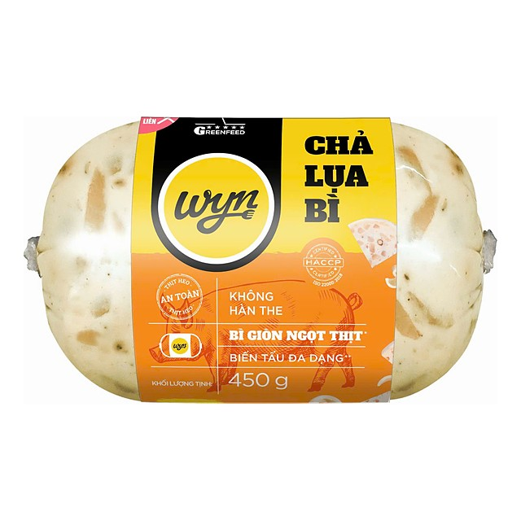
Bì hạt lựu giòn, tiêu bể cay nhẹ; không hàn the.
Cây 450g
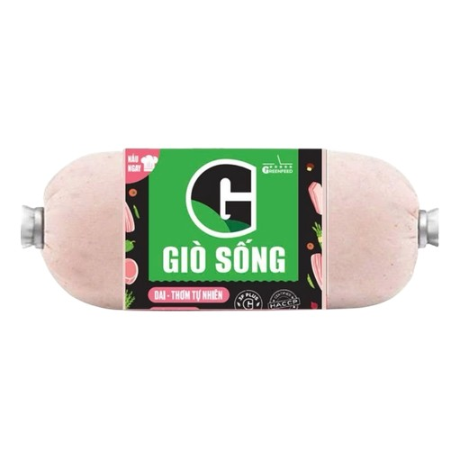
Thịt heo xay nhuyễn dẻo mềm, thấm gia vị; nguyên liệu nấu món ăn.
Cây 200g
Dai giòn tự nhiên, không hàn the; có loại bảo quản đông (hạn 12 tháng) và loại mát.
Túi 500g (10 cây) · 20 túi/thùng; túi 180g (4 cây) · 10 túi/thùng
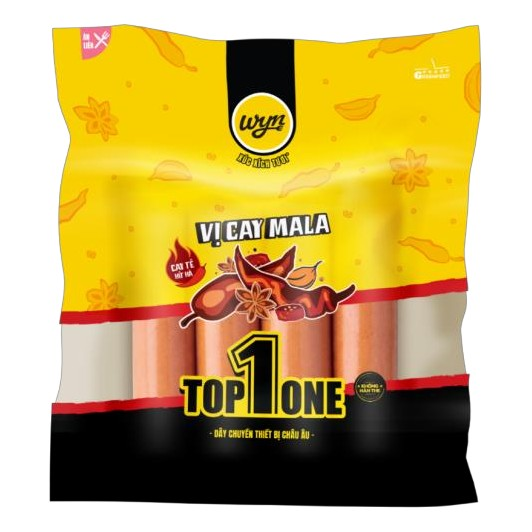
Thơm mùi Mala, vị cay tê; chiên, nướng, mì trộn, thả lẩu.
Túi 180g (4 cây) · 10 túi/thùng
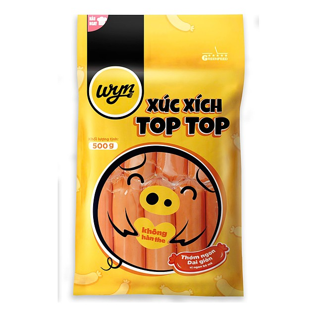
Vỏ dai giòn, thịt ngọt đậm đà; có loại bảo quản mát và loại đông.
Túi 500g (10 cây) · 20 túi/thùng
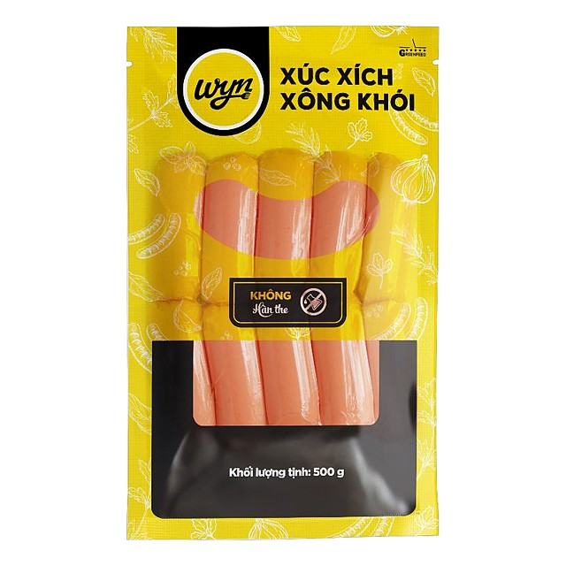
Vỏ dai giòn, thơm hương xông khói đặc trưng.
Túi 500g (10 cây)
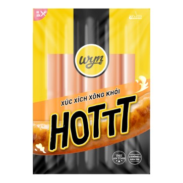
Thơm xông khói, dai giòn tự nhiên, chiên hay nướng đều ngon.
Túi 450g
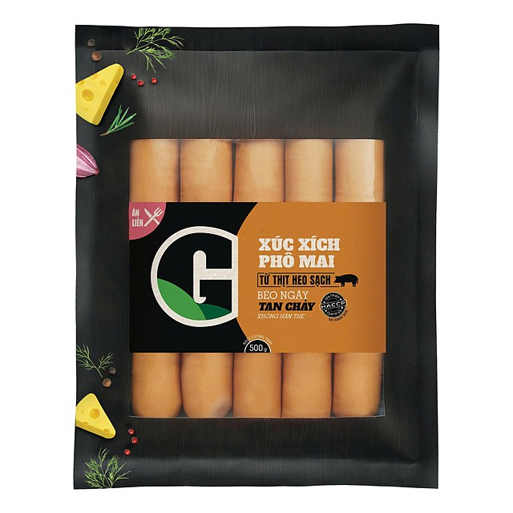
Phô mai Cheddar hạt to, tan chảy khi chiên nướng.
Túi 500g (10 cây) · túi 200g (4 cây)
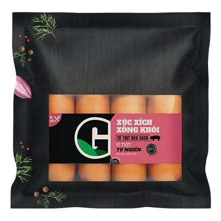
Thơm nồng mùi xông khói, giòn dai từ lớp vỏ collagen.
Túi 200g (4 cây)
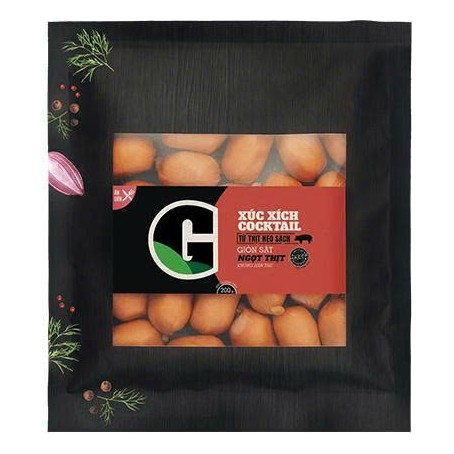
Viên nhỏ vừa miệng, thơm khói gỗ sồi; thả lẩu, xào rau củ, chiên.
Túi 200g (20 viên)
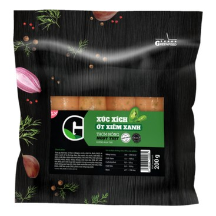
Thơm vị ớt xiêm xanh, cay nhẹ; vỏ giòn, ruột dai mướt.
Túi 200g (4 cây)
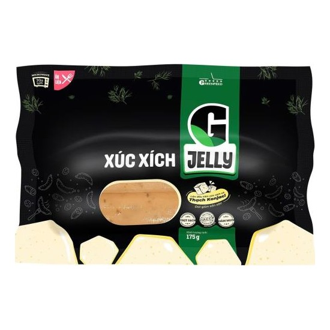
Xúc xích kết hợp thạch konjac giòn dai; làm nóng lò vi sóng 30 giây.
Túi 175g (2 cây)
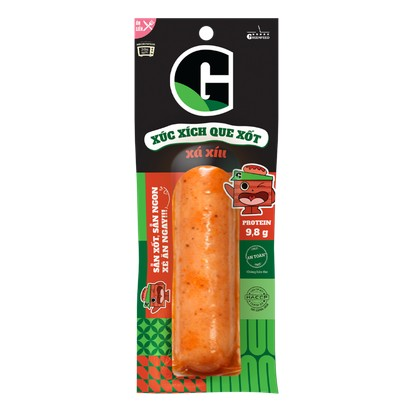
Sẵn xốt, xé ăn ngay; khẩu phần 1 người.
Que 65g
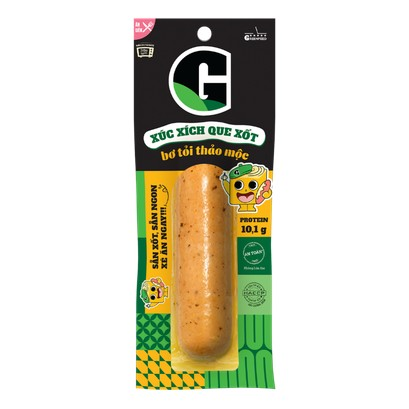
Sẵn xốt bơ tỏi thảo mộc, xé ăn ngay; khẩu phần 1 người.
Que 65g
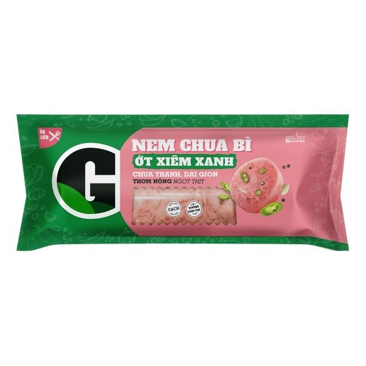
Lên men tự nhiên, 100% thịt nạc, chua thanh, cay nhẹ ớt xiêm xanh.
Túi 180g
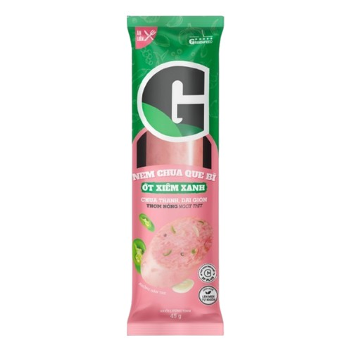
Dạng que nhỏ gọn, chua thanh dai giòn.
Que 45g
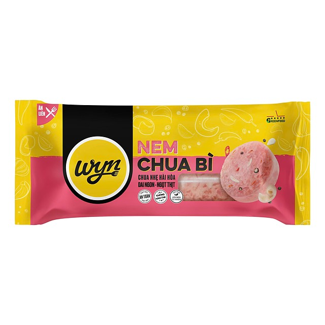
Chua ngọt hài hoà, bì giòn dai, cay nhẹ ớt sừng.
Túi 180g
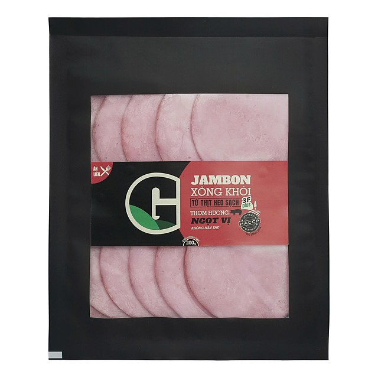
Ngọt thịt, thơm xông khói; kẹp bánh mì, sandwich, salad.
Túi 200g (10 lát)
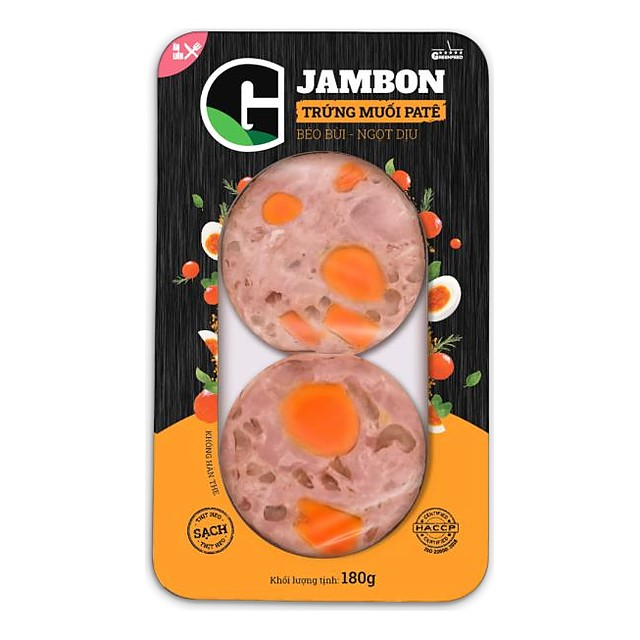
Jambon mềm mịn, patê thơm béo, nhân trứng muối.
Hộp 180g (2 khối)
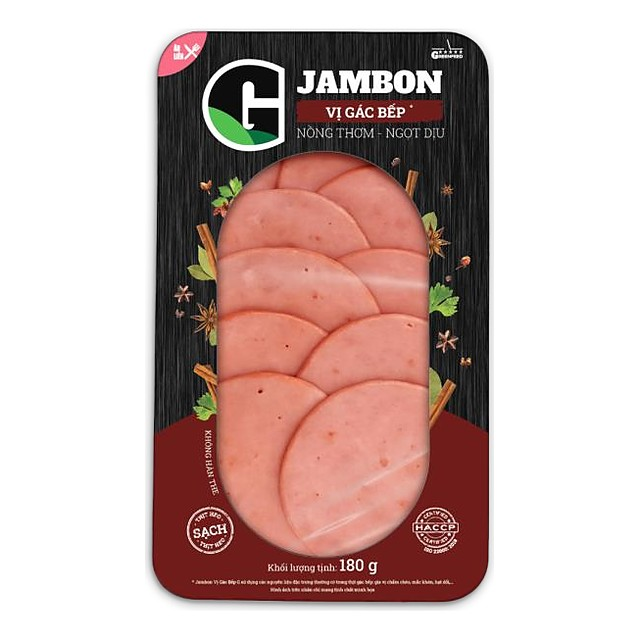
Hương khói cùng chẩm chéo, mắc khén, hạt dổi.
Hộp 180g (10 lát)
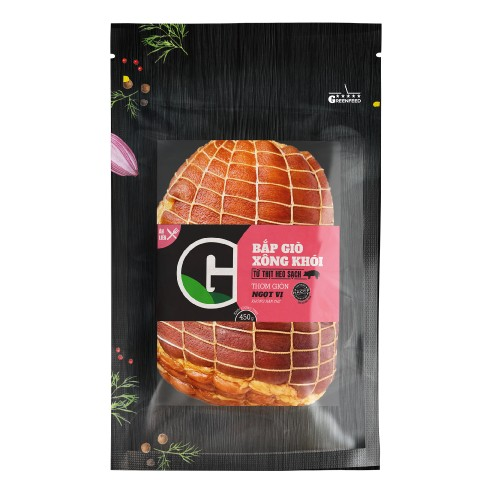
Thịt dai ngọt, hương xông khói; không hàn the.
Túi 450g
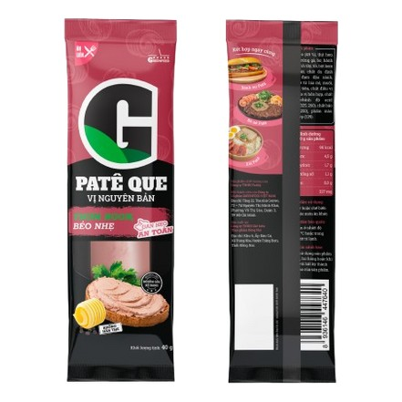
Patê gan kết hợp bơ trứng; ăn kèm bánh mì, xôi, cơm.
Que 40g · cây 1kg
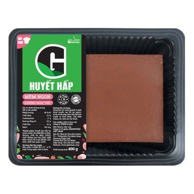
Mềm mịn; nấu canh huyết, huyết xào giá hẹ, bún riêu.
Khay 400g
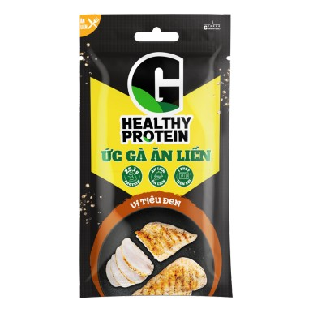
100% ức gà sạch, thịt mềm mướt, tiêu đen cay the nhẹ.
Gói 100g · hộp 6 gói
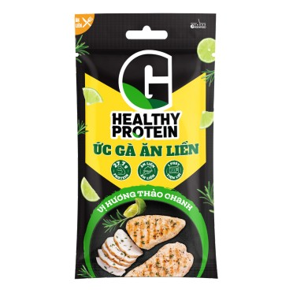
Ức gà mềm, thơm hương thảo và chanh tươi.
Gói 100g
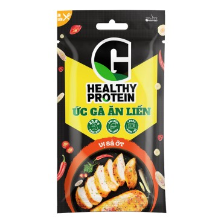
Ức gà mềm, thơm sả tươi quyện ớt cay nhẹ.
Gói 100g
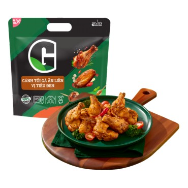
Làm nóng từ 1 phút là ăn; hợp bữa cơm nhanh, tụ họp.
Túi 250g
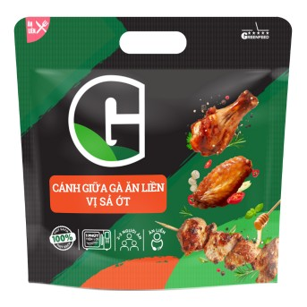
Thơm sả, cay nhẹ ớt; tiện cho ngày bận rộn, đi chơi xa.
Túi 220g
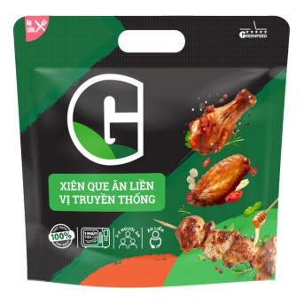
Thịt heo sạch, mật ong và xốt BBQ; làm nóng từ 1 phút.
Túi 220g
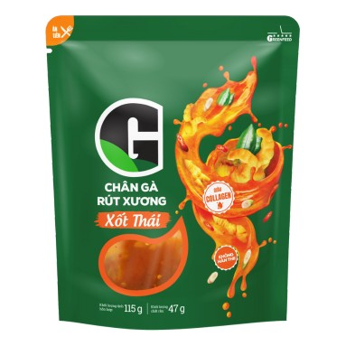
Dai giòn sần sật, xốt Thái thơm nồng; túi nhỏ cho 1 người.
Túi 115g
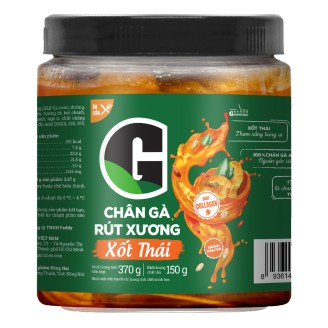
Hộp lớn cho gia đình hoặc nhóm bạn.
Hộp 370g
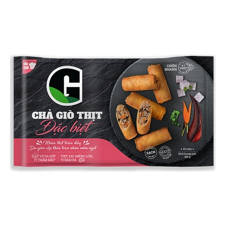
Nhân thịt, khoai môn, củ sắn, nấm mèo; vỏ xốp ít thấm dầu.
Gói 400g
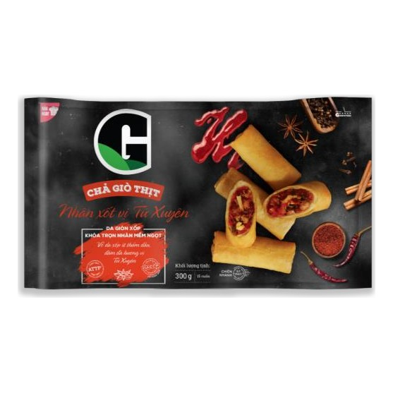
Vỏ giòn xốp, nhân mềm ngọt vị Tứ Xuyên.
Gói 300g
Vỏ xốp ít thấm dầu, béo thơm xốt phô mai.
Gói 300g (15 cuốn)
Nhiều thịt, thêm rau củ; nấu súp, xốt cà, mì Ý.
Gói 300g
Thêm nấm hương; nấu súp, xốt cà, mì Ý.
Gói 300g
Cá dai thơm, nhân phô mai mozzarella kéo sợi.
Gói 300g
Mật ong, xốt BBQ; chiên, nướng, áp chảo.
Khay 400g
Vị chao béo bùi, cay the; chiên, nướng, áp chảo.
Khay 400g
Xốt Thái với lá chanh, sả; nạc mỡ đan xen.
Khay 350g
Cà ri thơm, béo bùi, cay the nhẹ từ ớt.
Khay 350g
Vị chao béo bùi, cay the, thịt mềm.
Khay 350g
Nhắn Zalo OA – Quỳnh Hòa hỏi thăm cửa hàng, gợi ý vài món nên thử trước và gửi giá cho anh chị.
Nhắn Zalo OA Quét bằng Zalo
Quét bằng Zalo